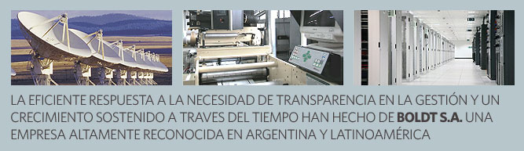

LA GéNESIS DE LA INNOVACIóN
Desde sus orígenes, acontecido en la década del 30 momento durante el
cual la compañía comienza a brindar servicios de impresiones de
seguridad a bancos e instituciones financieras, hasta el presente,
caracterizado por el amplio espectro de negocios en los que se
especializa, Boldt S.A. es un ejemplo de evolución empresaria basada en
la innovación.
Cumplidos más de 75 años garantizando experiencia y confiabilidad,
Boldt S.A. renueva diariamente su compromiso de liderazgo empresario
apoyándose en los pilares del desarrollo tecnológico, la flexibilidad y
el espíritu emprendedor.
Boldt S.A. mira hacia el futuro en busca de nuevos desafíos, y es en la
industria del entretenimiento donde proyecta un mayor crecimiento en
los próximos años.
Las actividades propias de este mercado que requieren facilidades
teleinformáticas masivas, infraestructura y seguridad, encontrarán en
Boldt S.A. un aliado eficiente y eficaz con el know how para ofrecer
soluciones a medida.
